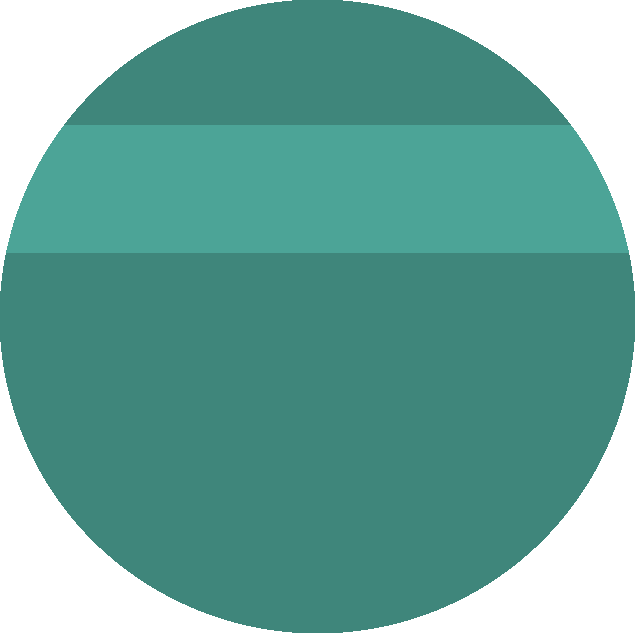

Fábio Meneghetti
Teoria da Informação ∩ Geometria
Doutorando na UNICAMP
Acadêmico
CV Lattes
ResearchGate
Social
Nostr
Build your own by forking LittleLink.
Teoria da Informação ∩ Geometria
Doutorando na UNICAMP
Build your own by forking LittleLink.